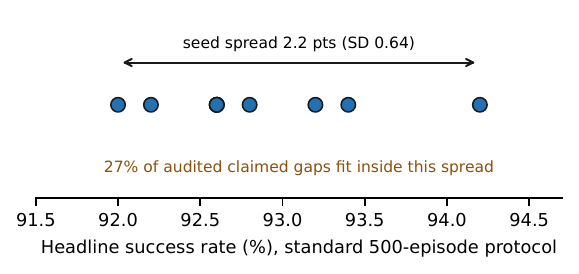

RoboRigor
Same Scene, Different Answer:
Variance and Rollout Budgets for Flow-Policy Evaluation
NeurIPS 2026 Workshop on Trust-AI-Eval (TAE): Can We Trust AI Evaluation? Poster.
TL;DR
A reported success rate for a flow-matching VLA policy is a sample from a distribution nobody has decomposed. We decompose it, and the scene turns out to be the smaller share. Holding the initial state fixed leaves 61 to 84 percent of outcome variance in play across three released policies on LIBERO; on the informative task it splits into the flow sampler (38.5 percent of total) and system nondeterminism (46.0 percent), both invisible in a single reported rate, and the partition replicates at three environment seeds. Rerunning the field's standard 500-episode protocol while changing only the sampling seed moves the headline number by 2.2 points, a band that already contains 27 percent of the recomputable improvements highlighted across 50 recent VLA papers. The measured components give a rollout budget, and we spend it: a powered factorial of denoising steps by execution horizon on released checkpoints shows the shipped pi0.5 default is dominated, with a single Euler step at horizon 10 statistically indistinguishable from the 10-step default at 2.7x lower measured latency. Every analysis is pre-registered or labeled exploratory in a public deviations log.

Findings
- Where the variance lives. With the initial state held fixed, 61 to 84 percent of per-init outcome variance remains across pi0.5, pi0, and SmolVLA on the informative task. A replicate block on pi0.5 attributes 38.5 percent of total variance to the flow sampler and 46.0 percent to system nondeterminism. On saturated tasks (observed rate at or above 0.96) both components collapse, which is why a battery average can look stable while the tasks that carry information do not.
- The budget that follows. Ten runs of the standard 500-episode LIBERO-10 protocol differing only in flow-sampling seed span 2.2 points; 27 percent of the 86 recomputable improvements in the audited papers fit inside that band. At the audited median of 50 rollouts per task the minimum detectable effect at LIBERO-typical base rates is 18 points, and a 2-point claim costs 2,200 episodes per arm. Pairing by initial state, free on LIBERO, buys a measured 1.4 to 2.3x relative efficiency; a released calculator inverts both directions exactly.
- The shipped default is dominated. On released pi0.5 the published default (10 steps, horizon 5) reaches 0.950 at 17.8 ms of measured inference latency per executed step; one Euler step at horizon 10 reaches 0.965 at 6.7 ms, and nothing on the 4x3 grid dominates it. Held to the paper's own standard the claim is equivalence, not superiority: the exact McNemar test does not separate the cells (p=0.26). Replanning cadence, not denoising budget, is the dial that matters: every replan-every-step cell loses 9 to 41 points to its horizon-10 counterpart. pi0 does not tolerate the one-step cut.
- The cut has one confirmed price. Under camera-viewpoint shift the one-step frontier costs pi0.5 4.7 points; on the other registered perturbation axes the contrast is inconclusive.
- Rankings survive off the floor; margins never do. Across identical LIBERO-Plus variant sets, no pairwise ordering of the three policies inverts on the registered axes (Kendall tau 1.0), yet one 16.5-point clean gap stands for anything from 9.6 to 67 points of deployed margin. The single significant inversion (SmolVLA over pi0 under robot-initial-state shift, exact p=0.0022; exploratory, post-freeze axis) appears exactly where an axis floors the trailing policies.
- A third of published claims cannot be checked at all. Across 50 VLA papers sampled under frozen intake rules, 34.4 percent of highlighted comparisons state no usable rollout count, only 31 of 131 state an evaluation-seed count, and 31.4 percent of the recomputable comparisons fail an exact test.


What to report
Report the dials: steps, horizon, and seed policy move the number by up to 41 points, and a success rate without them is not a measurement. Size the run before launching it. Pair everything the benchmark lets you pair. Average over sampling seeds on informative tasks and report the seed count. Report a margin band under perturbation, not a clean gap. Stop early honestly, with a declared rule.
Data and tooling
Per-episode records for every reported number on released pi0.5, pi0, and SmolVLA across LIBERO
and LIBERO-Plus; the frozen pre-registration with its deviations log; the audit extraction; and the
harness (pip install roborigor): exact intervals, paired comparisons, a rollout-budget
calculator, variance decomposition, and a campaign runner with exactly-once resume. Every number in
the paper, including the abstract's numerals, regenerates from the records by one script.
Extended report
A follow-up technical report from the same data, Certified by the Ceiling: Saturated Benchmarks Supply the No-Loss Claims Behind VLA Acceleration, asks what the saturated tasks do to equivalence certificates and adds a census of no-loss claims in 86 VLA efficiency papers.
BibTeX
@inproceedings{gunukula2026samescene,
title = {Same Scene, Different Answer: Variance and Rollout Budgets for Flow-Policy Evaluation},
author = {Gunukula, Nihal},
booktitle = {NeurIPS 2026 Workshop on Trust-AI-Eval (TAE): Can We Trust AI Evaluation?},
year = {2026},
note = {Non-archival. Code and per-episode logs: \url{https://github.com/nihalgunu/roborigor}}
}